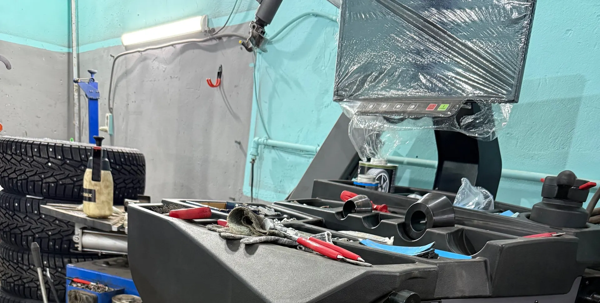

Автосервис, шиномонтаж, ремонт по записи
Автосервис в Ижевске: ремонт, ходовая, шиномонтаж по записи
Диагностика, тормоза и ходовая, ремонт DSG, шиномонтаж, балансировка и вулканизация. Работаем по предварительной записи.
- Работаем по предварительной записи
- Пн–пт 8:00–19:00, сб 10:00–16:00
- Шиномонтаж, балансировка, вулканизация

Услуги и цены
Точную сумму называем при записи, по марке и году автомобиля.
Основные услуги
- Диагностикауточнить
- Ремонт тормозной системыуточнить
- Ремонт ходовойуточнить
- Ремонт DSGуточнить
- Шиномонтаж и балансировкауточнить
- Вулканизацияуточнить
- Замена маслауточнить
Работаем и с другими видами ремонта: выхлопная система, автокондиционер, пластиковые бамперы, установка парктроника. Стоимость называем после осмотра.
Как проходит визит
- 01
Пишете в Telegram или звоните
Расскажите, что с машиной: часть вопросов можно решить заранее в переписке.
- 02
Записываем на удобное время
Работаем по предварительной записи, так машину принимают к назначенному часу.
- 03
Мастер объясняет, что нашёл
Клиенты пишут, что им всё рассказывают и показывают.
- 04
Забираете машину
Если срок сдвигается, звонят и предупреждают.
Что отмечают клиенты в отзывах
Звонят, если не успевают в срок
Клиент пишет, что обслуживается здесь уже пятый год, и о задержке сообщают заранее.
Не навязывают запчасти
По отзывам, лишнего «впарить» не стараются.
Всё расскажут и покажут
Мастера объясняют, на что обратить внимание в будущем.
Вопросы можно решить в Telegram
Клиент отмечает, что уточняющие вопросы обсудили в переписке до приезда.
Отзывы с Яндекс.Карт
«Хороший автосервис, мужики классные, за 4 минуты посмотрели и выявили проблему и за диагностику взяли всего 500 рублей, рекомендую»
Радим Саматов · 28 марта
«Грамотные парни с руками из нужного места. Всё делают чётко, быстро и по демократичным ценам.»
Алмаз Т. · 20 марта
«Пока самое надёжное место для ремонта авто. Расходники и сама работа на 5 звёзд. Работники вежливые и компетентные- все расскажут и покажут, на что обратить внимание в будущем. Ремонт и обслуживание авто только в Гуд авто!!!»
Елизавета Биянова · 13 июня
Отзывы с карточки на Яндекс.Картах, без правок.
Частые вопросы
Нужно ли записываться заранее?
Да, сервис работает по предварительной записи. Клиенты в отзывах советуют записываться заранее.
Какие работы делаете?
Диагностика, тормозная система, ходовая, ремонт DSG, шиномонтаж, балансировка, вулканизация, замена масла, выхлопная система, автокондиционер, бамперы, парктроник.
Когда работаете?
Пн–пт с 8:00 до 19:00, суббота с 10:00 до 16:00, воскресенье выходной.
Как записаться?
Позвоните или напишите в Telegram или во ВКонтакте, ссылки в блоке контактов.
Запишитесь на удобное время
- Адрес
- 7-я Подлесная ул., 18, Ижевск
- Часы
- Пн–пт 08:00–19:00, сб 10:00–16:00, вс выходной
- Телефон
- +7 (982) 815-40-00